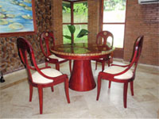
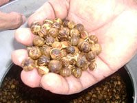
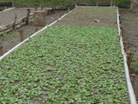

¿Por qué plantaciones comerciales de teca?
Con la prohibición de la exportación de trozas de teca en los años 90 por la sobre explotación de los 25 millones de hectáreas en bosques naturales ubicados en Myanmar, India, Tailandia y Laos, algunos de estos países pasaron de ser exportadores a importadores con precios que van desde USD 2,500/m³ para trozas de bosque natural arriba de 80 cm de diámetro hasta USD 500–700/m³ para trozas arriba de 40 cm.
Los altos precios de la madera de teca han aumentado el establecimiento de plantaciones forestales — el 3% se ubicaban en América, el 5% en África y el 90% en Asia del Este.

Introducida desde 1926 a América Central, la teca se ha convertido en la especie más plantada por el alto valor de su madera: hasta USD 2,500/m³ para diámetros arriba de 80 cm en trozas de bosque natural, y USD 600–700/m³ para trozas de plantaciones arriba de 40 cm de diámetro promedio.
Como lo demuestra Pérez (2005) en su tesis de doctorado, solo es posible obtener tasas internas de retorno positivas arriba del 14% si se seleccionan los mejores sitios para turnos de 20 años:
| Clase de Sitio | Objetivo | Turno (años) | VAN 5% | VAN 10% | TIR % |
|---|---|---|---|---|---|
| I | Máx. DAP | 20 | 44,188 | 10,017 | 23.4 |
| II | Máx. DAP | 20 | 18,858 | 5,856 | 16.5 |
| III | Máx. DAP | 20 | 3,892 | -722 | 8.8 |
La Semilla Escarificada: Una Innovación Costarricense

Hasta el año 2000 era bien conocido que la germinación de los frutos de teca era relativamente baja (25–35%). Durante una reunión en Panamá de la Red Regional de Semillas Forestales para América Central y El Caribe (REMSEFOR), el Ing. Carlos Ramírez descubrió por accidente que quitando el cáliz mediante escarificación mecánica se permitía el ingreso de agua a los embriones más fácilmente, resolviendo una de las causas de la baja germinación.

Ventajas de la semilla escarificada vs. semilla con corcho
- Aumento del número de frutos por kilo: de 900 hasta 1,800 frutos por kilo.
- Aumento del porcentaje de germinación: del 35% hasta el 45%, y hasta el 80% con semilla almacenada.
- Mayor homogeneidad y disminución del tiempo de germinación.
- Hasta 1,500 plantas útiles por kilo, contra solo 300–400 con semilla con corcho.
- Menos peso en el transporte al quitarse de un 25 a 30% del corcho.
Fuentes Semilleras Disponibles
Semillas y Bosques Mejorados S.A. pone a su disposición más de 10 rodales semilleros autorizados por la Oficina Nacional de Semillas de Costa Rica (ONS) con diferentes condiciones de sitio.